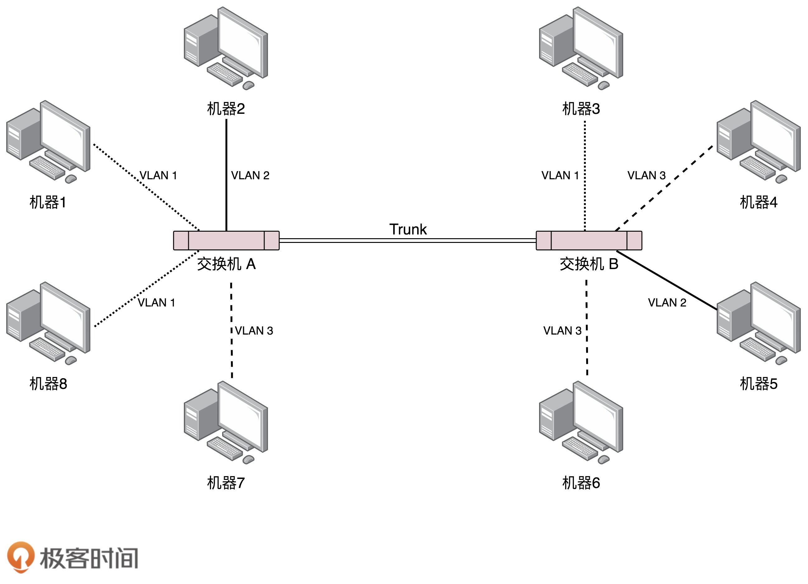

- 00 开篇词 想成为技术牛人？先搞定网络协议！.md
- 01 为什么要学习网络协议？.md
- 02 网络分层的真实含义是什么？.md
- 03 ifconfig：最熟悉又陌生的命令行.md
- 04 DHCP与PXE：IP是怎么来的，又是怎么没的？.md
- 05 从物理层到MAC层：如何在宿舍里自己组网玩联机游戏？.md
- 06 交换机与VLAN：办公室太复杂，我要回学校.md
- 07 ICMP与ping：投石问路的侦察兵.md
- 08 世界这么大，我想出网关：欧洲十国游与玄奘西行.md
- 09 路由协议：西出网关无故人，敢问路在何方.md
- 10 UDP协议：因性善而简单，难免碰到“城会玩”.md
- 11 TCP协议（上）：因性恶而复杂，先恶后善反轻松.md
- 12 TCP协议（下）：西行必定多妖孽，恒心智慧消磨难.md
- 13 套接字Socket：Talk is cheap, show me the code.md
- 14 HTTP协议：看个新闻原来这么麻烦.md
- 15 HTTPS协议：点外卖的过程原来这么复杂.md
- 16 流媒体协议：如何在直播里看到美女帅哥？.md
- 17 P2P协议：我下小电影，99%急死你.md
- 18 DNS协议：网络世界的地址簿.md
- 19 HttpDNS：网络世界的地址簿也会指错路.md
- 20 CDN：你去小卖部取过快递么？.md
- 21 数据中心：我是开发商，自己拿地盖别墅.md
- 22 VPN：朝中有人好做官.md
- 23 移动网络：去巴塞罗那，手机也上不了脸书.md
- 24 云中网络：自己拿地成本高，购买公寓更灵活.md
- 25 软件定义网络：共享基础设施的小区物业管理办法.md
- 26 云中的网络安全：虽然不是土豪，也需要基本安全和保障.md
- 27 云中的网络QoS：邻居疯狂下电影，我该怎么办？.md
- 28 云中网络的隔离GRE、VXLAN：虽然住一个小区，也要保护隐私.md
- 29 容器网络：来去自由的日子，不买公寓去合租.md
- 30 容器网络之Flannel：每人一亩三分地.md
- 31 容器网络之Calico：为高效说出善意的谎言.md
- 32 RPC协议综述：远在天边，近在眼前.md
- 33 基于XML的SOAP协议：不要说NBA，请说美国职业篮球联赛.md
- 34 基于JSON的RESTful接口协议：我不关心过程，请给我结果.md
- 35 二进制类RPC协议：还是叫NBA吧，总说全称多费劲.md
- 36 跨语言类RPC协议：交流之前，双方先来个专业术语表.md
- 37 知识串：用双十一的故事串起碎片的网络协议（上）.md
- 38 知识串：用双十一的故事串起碎片的网络协议（中）.md
- 39 知识串：用双十一的故事串起碎片的网络协议（下）.md
- 40 搭建一个网络实验环境：授人以鱼不如授人以渔.md
- 加餐1 创作故事：我是如何创作“趣谈网络协议”专栏的？.md
- 协议专栏特别福利 答疑解惑1期.md
- 协议专栏特别福利 答疑解惑2期.md
- 协议专栏特别福利 答疑解惑3期.md
- 协议专栏特别福利 答疑解惑4期.md
- 协议专栏特别福利 答疑解惑5期.md
- 结束语 放弃完美主义，执行力就是限时限量认真完成.md
06 交换机与VLAN：办公室太复杂，我要回学校
上一次，我们在宿舍里组建了一个本地的局域网LAN，可以愉快地玩游戏了。这是一个非常简单的场景，因为只有一台交换机，电脑数目很少。今天，让我们切换到一个稍微复杂一点的场景，办公室。
拓扑结构是怎么形成的？
我们常见到的办公室大多是一排排的桌子，每个桌子都有网口，一排十几个座位就有十几个网口，一个楼层就会有几十个甚至上百个网口。如果算上所有楼层，这个场景自然比你宿舍里的复杂多了。具体哪里复杂呢？我来给你具体讲解。
首先，这个时候，一个交换机肯定不够用，需要多台交换机，交换机之间连接起来，就形成一个稍微复杂的拓扑结构。
我们先来看两台交换机的情形。两台交换机连接着三个局域网，每个局域网上都有多台机器。如果机器1只知道机器4的IP地址，当它想要访问机器4，把包发出去的时候，它必须要知道机器4的MAC地址。

于是机器1发起广播，机器2收到这个广播，但是这不是找它的，所以没它什么事。交换机A一开始是不知道任何拓扑信息的，在它收到这个广播后，采取的策略是，除了广播包来的方向外，它还要转发给其他所有的网口。于是机器3也收到广播信息了，但是这和它也没什么关系。
当然，交换机B也是能够收到广播信息的，但是这时候它也是不知道任何拓扑信息的，因而也是进行广播的策略，将包转发到局域网三。这个时候，机器4和机器5都收到了广播信息。机器4主动响应说，这是找我的，这是我的MAC地址。于是一个ARP请求就成功完成了。
在上面的过程中，交换机A和交换机B都是能够学习到这样的信息：机器1是在左边这个网口的。当了解到这些拓扑信息之后，情况就好转起来。当机器2要访问机器1的时候，机器2并不知道机器1的MAC地址，所以机器2会发起一个ARP请求。这个广播消息会到达机器1，也同时会到达交换机A。这个时候交换机A已经知道机器1是不可能在右边的网口的，所以这个广播信息就不会广播到局域网二和局域网三。
当机器3要访问机器1的时候，也需要发起一个广播的ARP请求。这个时候交换机A和交换机B都能够收到这个广播请求。交换机A当然知道主机A是在左边这个网口的，所以会把广播消息转发到局域网一。同时，交换机B收到这个广播消息之后，由于它知道机器1是不在右边这个网口的，所以不会将消息广播到局域网三。
如何解决常见的环路问题？
这样看起来，两台交换机工作得非常好。随着办公室越来越大，交换机数目肯定越来越多。当整个拓扑结构复杂了，这么多网线，绕过来绕过去，不可避免地会出现一些意料不到的情况。其中常见的问题就是环路问题。
例如这个图，当两个交换机将两个局域网同时连接起来的时候。你可能会觉得，这样反而有了高可用性。但是却不幸地出现了环路。出现了环路会有什么结果呢？

我们来想象一下机器1访问机器2的过程。一开始，机器1并不知道机器2的MAC地址，所以它需要发起一个ARP的广播。广播到达机器2，机器2会把MAC地址返回来，看起来没有这两个交换机什么事情。
但是问题来了，这两个交换机还是都能够收到广播包的。交换机A一开始是不知道机器2在哪个局域网的，所以它会把广播消息放到局域网二，在局域网二广播的时候，交换机B右边这个网口也是能够收到广播消息的。交换机B会将这个广播信息发送到局域网一。局域网一的这个广播消息，又会到达交换机A左边的这个接口。交换机A这个时候还是不知道机器2在哪个局域网，于是将广播包又转发到局域网二。左转左转左转，好像是个圈哦。
可能有人会说，当两台交换机都能够逐渐学习到拓扑结构之后，是不是就可以了？
别想了，压根儿学不会的。机器1的广播包到达交换机A和交换机B的时候，本来两个交换机都学会了机器1是在局域网一的，但是当交换机A将包广播到局域网二之后，交换机B右边的网口收到了来自交换机A的广播包。根据学习机制，这彻底损坏了交换机B的三观，刚才机器1还在左边的网口呢，怎么又出现在右边的网口呢？哦，那肯定是机器1换位置了，于是就误会了，交换机B就学会了，机器1是从右边这个网口来的，把刚才学习的那一条清理掉。同理，交换机A右边的网口，也能收到交换机B转发过来的广播包，同样也误会了，于是也学会了，机器1从右边的网口来，不是从左边的网口来。
然而当广播包从左边的局域网一广播的时候，两个交换机再次刷新三观，原来机器1是在左边的，过一会儿，又发现不对，是在右边的，过一会，又发现不对，是在左边的。
这还是一个包转来转去，每台机器都会发广播包，交换机转发也会复制广播包，当广播包越来越多的时候，按照上一节讲过一个共享道路的算法，也就是路会越来越堵，最后谁也别想走。所以，必须有一个方法解决环路的问题，怎么破除环路呢？
STP协议中那些难以理解的概念
在数据结构中，有一个方法叫做最小生成树。有环的我们常称为图。将图中的环破了，就生成了树。在计算机网络中，生成树的算法叫作STP，全称Spanning Tree Protocol。
STP协议比较复杂，一开始很难看懂，但是其实这是一场血雨腥风的武林比武或者华山论剑，最终决出五岳盟主的方式。

在STP协议里面有很多概念，译名就非常拗口，但是我一作比喻，你很容易就明白了。
-
Root Bridge，也就是根交换机。这个比较容易理解，可以比喻为“掌门”交换机，是某棵树的老大，是掌门，最大的大哥。
-
Designated Bridges，有的翻译为指定交换机。这个比较难理解，可以想像成一个“小弟”，对于树来说，就是一棵树的树枝。所谓“指定”的意思是，我拜谁做大哥，其他交换机通过这个交换机到达根交换机，也就相当于拜他做了大哥。这里注意是树枝，不是叶子，因为叶子往往是主机。
-
Bridge Protocol Data Units （BPDU） ，网桥协议数据单元。可以比喻为“相互比较实力”的协议。行走江湖，比的就是武功，拼的就是实力。当两个交换机碰见的时候，也就是相连的时候，就需要互相比一比内力了。BPDU只有掌门能发，已经隶属于某个掌门的交换机只能传达掌门的指示。
-
Priority Vector，优先级向量。可以比喻为实力 （值越小越牛）。实力是啥？就是一组ID数目，[Root Bridge ID, Root Path Cost, Bridge ID, and Port ID]。为什么这样设计呢？这是因为要看怎么来比实力。先看Root Bridge ID。拿出老大的ID看看，发现掌门一样，那就是师兄弟；再比Root Path Cost，也即我距离我的老大的距离，也就是拿和掌门关系比，看同一个门派内谁和老大关系铁；最后比Bridge ID，比我自己的ID，拿自己的本事比。
STP的工作过程是怎样的？
接下来，我们来看STP的工作过程。
一开始，江湖纷争，异常混乱。大家都觉得自己是掌门，谁也不服谁。于是，所有的交换机都认为自己是掌门，每个网桥都被分配了一个ID。这个ID里有管理员分配的优先级，当然网络管理员知道哪些交换机贵，哪些交换机好，就会给它们分配高的优先级。这种交换机生下来武功就很高，起步就是乔峰。

既然都是掌门，互相都连着网线，就互相发送BPDU来比功夫呗。这一比就发现，有人是岳不群，有人是封不平，赢的接着当掌门，输的就只好做小弟了。当掌门的还会继续发BPDU，而输的人就没有机会了。它们只有在收到掌门发的BPDU的时候，转发一下，表示服从命令。

数字表示优先级。就像这个图，5和6碰见了，6的优先级低，所以乖乖做小弟。于是一个小门派形成，5是掌门，6是小弟。其他诸如1-7、2-8、3-4这样的小门派，也诞生了。于是江湖出现了很多小的门派，小的门派，接着合并。
合并的过程会出现以下四种情形，我分别来介绍。
情形一：掌门遇到掌门
当5碰到了1，掌门碰见掌门，1觉得自己是掌门，5也刚刚跟别人PK完成为掌门。这俩掌门比较功夫，最终1胜出。于是输掉的掌门5就会率领所有的小弟归顺。结果就是1成为大掌门。

情形二：同门相遇
同门相遇可以是掌门与自己的小弟相遇，这说明存在“环”了。这个小弟已经通过其他门路拜在你门下，结果你还不认识，就PK了一把。结果掌门发现这个小弟功夫不错，不应该级别这么低，就把它招到门下亲自带，那这个小弟就相当于升职了。
我们再来看，假如1和6相遇。6原来就拜在1的门下，只不过6的上司是5，5的上司是1。1发现，6距离我才只有2，比从5这里过来的5（=4+1）近多了，那6就直接汇报给我吧。于是，5和6分别汇报给1。

同门相遇还可以是小弟相遇。这个时候就要比较谁和掌门的关系近，当然近的当大哥。刚才5和6同时汇报给1了，后来5和6在比较功夫的时候发现，5你直接汇报给1距离是4，如果5汇报给6再汇报给1，距离只有2+1=3，所以5干脆拜6为上司。
情形三：掌门与其他帮派小弟相遇
小弟拿本帮掌门和这个掌门比较，赢了，这个掌门拜入门来。输了，会拜入新掌门，并且逐渐拉拢和自己连接的兄弟，一起弃暗投明。

例如，2和7相遇，虽然7是小弟，2是掌门。就个人武功而言，2比7强，但是7的掌门是1，比2牛，所以没办法，2要拜入7的门派，并且连同自己的小弟都一起拜入。
情形四：不同门小弟相遇
各自拿掌门比较，输了的拜入赢的门派，并且逐渐将与自己连接的兄弟弃暗投明。-

例如，5和4相遇。虽然4的武功好于5，但是5的掌门是1，比4牛，于是4拜入5的门派。后来当3和4相遇的时候，3发现4已经叛变了，4说我现在老大是1，比你牛，要不你也来吧，于是3也拜入1。
最终，生成一棵树，武林一统，天下太平。但是天下大势，分久必合，合久必分，天下统一久了，也会有相应的问题。
如何解决广播问题和安全问题？
毕竟机器多了，交换机也多了，就算交换机比Hub智能一些，但是还是难免有广播的问题，一大波机器，相关的部门、不相关的部门，广播一大堆，性能就下来了。就像一家公司，创业的时候，一二十个人，坐在一个会议室，有事情大家讨论一下，非常方便。但是如果变成了50个人，全在一个会议室里面吵吵，就会乱得不得了。
你们公司有不同的部门，有的部门需要保密的，比如人事部门，肯定要讨论升职加薪的事儿。由于在同一个广播域里面，很多包都会在一个局域网里面飘啊飘，碰到了一个会抓包的程序员，就能抓到这些包，如果没有加密，就能看到这些敏感信息了。还是上面的例子，50个人在一个会议室里面七嘴八舌地讨论，其中有两个HR，那他们讨论的问题，肯定被其他人偷偷听走了。
那咋办，分部门，分会议室呗。那我们就来看看怎么分。
有两种分的方法，一个是物理隔离。每个部门设一个单独的会议室，对应到网络方面，就是每个部门有单独的交换机，配置单独的子网，这样部门之间的沟通就需要路由器了。路由器咱们还没讲到，以后再说。这样的问题在于，有的部门人多，有的部门人少。人少的部门慢慢人会变多，人多的部门也可能人越变越少。如果每个部门有单独的交换机，口多了浪费，少了又不够用。
另外一种方式是虚拟隔离，就是用我们常说的VLAN，或者叫虚拟局域网。使用VLAN，一个交换机上会连属于多个局域网的机器，那交换机怎么区分哪个机器属于哪个局域网呢？-

我们只需要在原来的二层的头上加一个TAG，里面有一个VLAN ID，一共12位。为什么是12位呢？因为12位可以划分4096个VLAN。这样是不是还不够啊。现在的情况证明，目前云计算厂商里面绝对不止4096个用户。当然每个用户需要一个VLAN了啊，怎么办呢，这个我们在后面的章节再说。
如果我们买的交换机是支持VLAN的，当这个交换机把二层的头取下来的时候，就能够识别这个VLAN ID。这样只有相同VLAN的包，才会互相转发，不同VLAN的包，是看不到的。这样广播问题和安全问题就都能够解决了。- 
我们可以设置交换机每个口所属的VLAN。如果某个口坐的是程序员，他们属于VLAN 10；如果某个口坐的是人事，他们属于VLAN 20；如果某个口坐的是财务，他们属于VLAN 30。这样，财务发的包，交换机只会转发到VLAN 30的口上。程序员啊，你就监听VLAN 10吧，里面除了代码，啥都没有。
而且对于交换机来讲，每个VLAN的口都是可以重新设置的。一个财务走了，把他所在座位的口从VLAN 30移除掉，来了一个程序员，坐在财务的位置上，就把这个口设置为VLAN 10，十分灵活。
有人会问交换机之间怎么连接呢？将两个交换机连接起来的口应该设置成什么VLAN呢？对于支持VLAN的交换机，有一种口叫作Trunk口。它可以转发属于任何VLAN的口。交换机之间可以通过这种口相互连接。
好了，解决这么多交换机连接在一起的问题，办公室的问题似乎搞定了。然而这只是一般复杂的场景，因为你能接触到的网络，到目前为止，不管是你的台式机，还是笔记本所连接的网络，对于带宽、高可用等都要求不高。就算出了问题，一会儿上不了网，也不会有什么大事。
我们在宿舍、学校或者办公室，经常会访问一些网站，这些网站似乎永远不会“挂掉”。那是因为这些网站都生活在一个叫做数据中心的地方，那里的网络世界更加复杂。在后面的章节，我会为你详细讲解。
小结
好了，这节就到这里，我们这里来总结一下：
- 当交换机的数目越来越多的时候，会遭遇环路问题，让网络包迷路，这就需要使用STP协议，通过华山论剑比武的方式，将有环路的图变成没有环路的树，从而解决环路问题。
- 交换机数目多会面临隔离问题，可以通过VLAN形成虚拟局域网，从而解决广播问题和安全问题。
最后，给你留两个思考题。
- STP协议能够很好地解决环路问题，但是也有它的缺点，你能举几个例子吗？
- 在一个比较大的网络中，如果两台机器不通，你知道应该用什么方式调试吗？
欢迎你留言和我讨论。趣谈网络协议，我们下期见！
© 2019 - 2023 Liangliang Lee. Powered by Vert.x and hexo-theme-book.